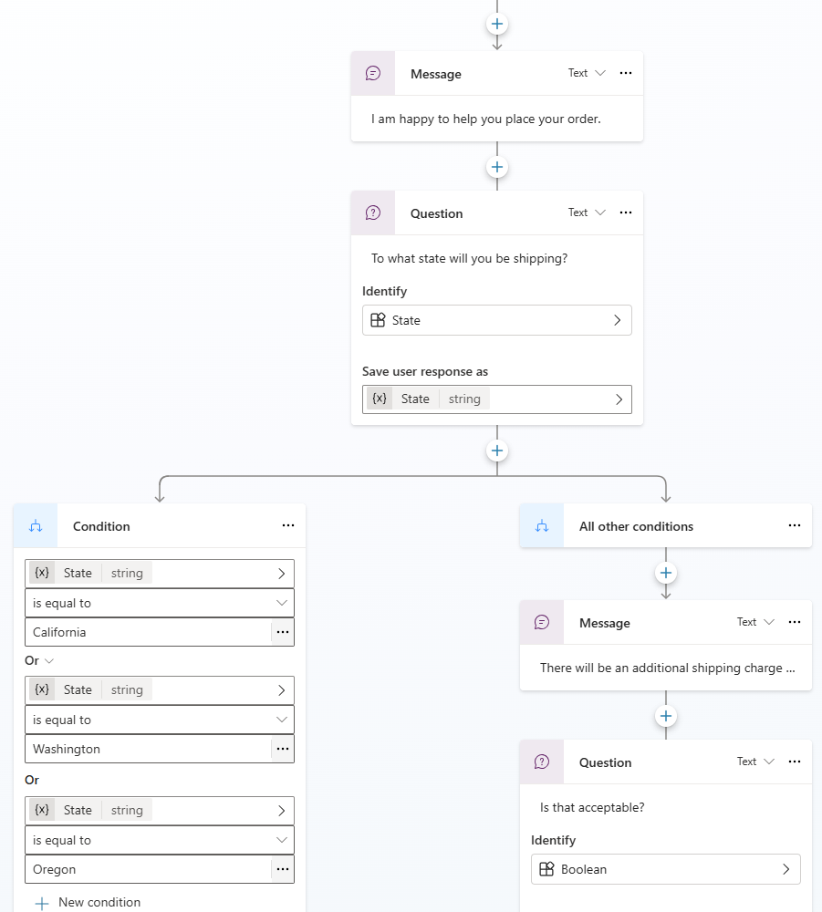
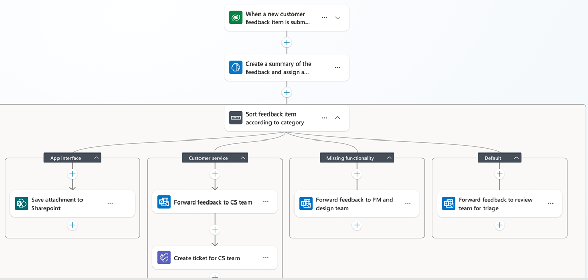
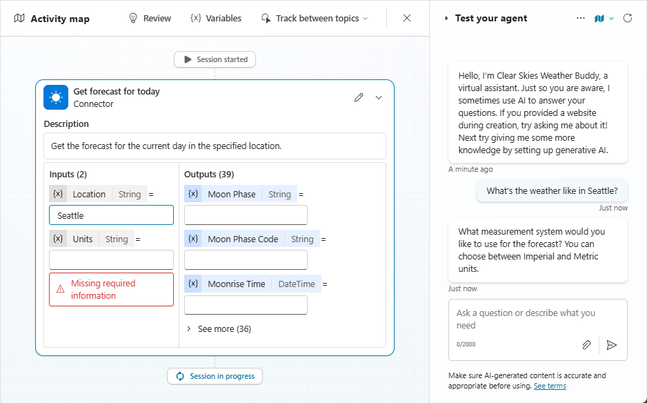

Build a barista.
From an empty folder to a working Copilot Studio agent in 15 steps. A Git Bash wizard walks you through it one screen at a time, and code checks the numbers your flow and agent give back. The bonus round puts your agent in files with the Copilot Studio CLI.


Extract the folder
Right-click the zip, Extract All. Running it from inside the zip doesn't work. Never used Git Bash? Start with Git Bash from zero.
Double-click start.cmd
It finds Git Bash and opens the wizard at the right size. Or right-click the folder, Open Git Bash here.
Follow the screens
$ bash start.sh doctor
The second one checks your laptop when something's off.
Git Bash from zero.
Never opened a terminal? Start here. This page takes you from a laptop without Git Bash to the first screen of the workshop wizard in about 15 minutes. Do it before the workshop if you can.
A terminal is a window where you type commands instead of clicking. Git Bash is the terminal that comes with Git for Windows. It runs Bash, the same command language Macs and Linux servers use, which is why one script can walk everybody through the workshop the same way. The wizard only copies one file, opens web pages and checks numbers. It doesn't change anything else on your laptop.
1. Check whether Git Bash is already installed
- Press the Windows key and type
Git Bash. - If Git Bash shows up in the results, it's installed. Skip to section 3.
- If nothing shows up, go to section 2.
2. Install Git for Windows
Git Bash is part of Git for Windows. On a GT laptop you install it from the Software Center, which doesn't need admin rights.
- Press the Windows key, type
Software Center(Softwarecentrum) and open it. - Search for
Git. - Click Git for Windows, then Install (Installeren). It takes a few minutes.
- Can't find it in the Software Center? Ask the facilitator before the workshop, not during it.
Not in the Software Center? On GT laptops winget, Windows' own installer, works too. Open PowerShell (Windows key, type PowerShell, Enter) and run:
winget install --id Git.Git -e
Then open Git Bash from the Start menu.
On a laptop where you're allowed to install software yourself, you can also download the installer from https://git-scm.com/download/win. Click Next on every screen: the default choices are right for this workshop. Two of them matter, so leave them as they are:
- Git Bash Here stays ticked. It adds "Open Git Bash here" to the right-click menu.
- Use MinTTY stays selected. MinTTY is the window Git Bash runs in, with colours and proper copy and paste.
Check it worked. Open Git Bash (Windows key, type Git Bash, Enter) and type:
git --version
Press Enter. You should see a line like git version 2.47.1.windows.1. The exact number doesn't matter.
3. Get the workshop files
The facilitator shares tutorial-deployment.zip in the workshop Teams channel.
- Download the zip. It lands in your Downloads folder.
- Right-click the zip and choose Extract All (Alles uitpakken), then Extract (Uitpakken).
- A folder called
tutorial-deploymentopens. Inside it arestart.cmd,start.sh, and the foldersdata,guideandsteps.
Don't double-click your way into the zip and run things from there. Windows only shows you a preview of the files, and the wizard can't find its data.
Have access to the GitHub repo? Then you can clone it instead of downloading the zip. Open Git Bash and type:
cd ~/Downloads git clone https://github.com/SarveshGT1/tutorial-deployment.git
4. Open Git Bash in the workshop folder
Git Bash works in one folder at a time, so it has to start in tutorial-deployment. There are three ways to do that. Use the first one that works.
Way 1: double-click start.cmd. It finds Git Bash, opens a window at the right size in the right folder, and starts the wizard. If Windows shows "Windows protected your PC", click More info, then Run anyway.
Way 2: right-click the folder. In File Explorer, right-click the tutorial-deployment folder. On Windows 11, choose Show more options first. Then choose Open Git Bash here.
Way 3: open Git Bash and walk to the folder. Open Git Bash from the Start menu and type:
cd ~/Downloads/tutorial-deployment
Check you're in the right place. Type ls and press Enter. You should see these names, maybe in a different order:
data GIT-BASH.md guide README.md start.cmd start.sh steps tools TROUBLESHOOTING.md
If you see something else, type pwd to see where you are, and use way 3 to get to the folder.
5. Git Bash in five minutes
These are all the commands you need today, and a few that will save you when something looks odd.
| type this | and it |
|---|---|
pwd | shows which folder you're in ("print working directory") |
ls | lists what's in the folder |
cd data | goes into the folder data |
cd .. | goes up one folder |
cd ~ | goes to your user folder, like C:\Users\you |
clear | wipes the screen |
bash start.sh | runs the workshop wizard |
Tab finishes words for you. Type cd tut and press Tab: Git Bash completes it to cd tutorial-deployment/. Use it everywhere; it saves typos.
The up arrow brings back your last command. Press it again to go further back. Handy when you want to run the wizard again.
Copy and paste work differently from Word. In Git Bash:
- Copy: select text with the mouse. With the default settings that already copies it. Ctrl+Insert also works.
- Paste: Shift+Insert, or right-click and choose Paste.
- Ctrl+C does not copy. It stops whatever is running. In the wizard that's fine: your progress is saved.
- Ctrl+V does not paste in a default Git Bash window. Use Shift+Insert.
Windows paths look different. Git Bash writes C:\Users\you\Downloads as /c/Users/you/Downloads, with forward slashes. ~ is short for your user folder, so ~/Downloads is your Downloads folder. A folder name with spaces needs quotes: cd "OneDrive - Company name".
Text too small? Ctrl+plus makes it bigger, Ctrl+minus smaller, Ctrl+0 resets it. Window too small? Drag the bottom-right corner, or press Alt+Enter for full screen (Alt+Enter again to go back).
Lost? Close the window and open it again with way 2 from section 4. Nothing breaks when you close Git Bash.
6. Check your laptop with the doctor
Before the wizard, let it check the laptop:
bash start.sh doctor
Each line starts with ✓ (fine) or ! (look at this). Under every ! is the fix. Two results are common and harmless:
- OneDrive not found: you'll upload the Excel file by hand in step 2. The wizard shows you how.
- Window smaller than 100 x 34: drag the window bigger.
Everything else with a ! is worth fixing first. TROUBLESHOOTING.md has the details, or ask the facilitator.
7. Run the wizard
bash start.sh
Type your first name when it asks, and follow the screens. Every step has four screens:
| key | screen |
|---|---|
| Enter | step done, on to the next one |
| w | why this step matters (+10 XP the first time) |
| i | what happens inside (+10 XP the first time) |
| h | stuck? the fixes for this step |
| g | open the visual guide in your browser |
| b | back one step |
| q | quit; your progress is saved |
Type the letter and press Enter. Most steps end with a quiz (type a, b or c), and three steps ask you for a number that the script checks against the Excel file.
Put the windows side by side. Click Git Bash and press Windows key + left arrow. Click your browser and press Windows key + right arrow. Now you can read the wizard while you click in the browser.
Stopping and continuing. Press q, or just close the window. Next time, open Git Bash in the same folder and type bash start.sh again: you continue at the same step, with the same XP.
Useful extras:
bash start.sh --step 8 # jump to step 8; your XP stays bash start.sh --ascii # plain characters, if you see boxes or question marks bash start.sh --reset # start over from zero bash start.sh --help # this list
8. Bonus: the Copilot Studio CLI
After step 15 the wizard offers a bonus round with the Copilot Studio CLI, pac copilot. It's part of the Power Platform CLI, and it's how GT ships agents: written as YAML files, kept in Git, deployed from a laptop. In three steps you install it, find your own agent from Git Bash, and clone that agent into a folder of text files. The wizard runs every command for you and shows it first, so you see exactly what was typed.
Want to try the commands yourself afterwards? These are the ones the bonus round uses:
winget install Microsoft.PowerAppsCLI # once, then open a NEW Git Bash window pac auth create # sign in; a browser window opens pac org who # which environment am I in? pac env list # all environments, with their URLs pac copilot list # the agents in this environment pac copilot clone --bot <id> --output-dir agent-code
Two things that trip people up:
- pac isn't found right after installing. Close every Git Bash window and open a new one. Programs you install only show up in new windows.
- Your agent isn't in
pac copilot list. You're signed in to another environment. Runpac env list, copy the workshop environment's URL, and runpac auth create --environment <that URL>.
9. After the workshop
- Your agent and flows stay in the workshop environment. Delete them there if the facilitator asks you to.
bash start.sh --resetwipes your progress on the laptop. Deleting thetutorial-deploymentfolder removes everything else, including the clonedagent-codefolder.- The copy of
koffie.xlsxin your OneDrive folderGT-Agent-Workshopis yours to keep or delete.
Read, build, prove it.
Every step pays XP. Reading why it works pays too, and the quizzes ask about what you read. Code checks three numbers along the way, and those pay the most.
| Finish a step | +100 |
| Open a step's Why (w) or Inside (i) screen | +10 each |
| Quiz right the first time / second time | +50 / +20 |
| Streak: quizzes right first time in a row | +10 per streak, max +50 |
| Check: flow rows (step 7), agent answer (13) | +100 each |
| Final check: the agent after your new row (15) | +250 |
| Bonus: find your agent with pac (17), clone it (18) | +150 each |
| Every badge | +50 |
| Data drop | Your data sits in a named table in the cloud |
| Deterministic | Your flow counted, the same way twice |
| Agent born | Your agent has a tool it can call |
| Live data | The data changed, the agent kept up, code agreed |
| Quiz master | Every quiz right the first time |
| Curious | Read every Why and every Inside screen |
| Speedrun | Finished within 40 minutes |
| Partner | Reached the top of the ladder |
| Agent as code | Your agent is a folder of files, cloned with pac |
The data.
Every agent starts as a folder. Before any AI, there is a place where the data lives, and someone who decides what goes in it.
In this act you make that folder and put an Excel table in it.
Check in, barista
- Put this window on the left half of your screen
- Put your browser on the right half
- Press w for the why, i for what happens inside
- Then press Enter and type your first name
About thirty people build in the same Copilot Studio environment today. Your name goes into every flow and agent you make, so you can find yours and nobody overwrites anybody else's.
Read the why and what screens. Each one gives you XP, and the quiz after every step asks about them.
This script is plain Bash. It runs on your laptop and never talks to Microsoft itself. It does four things:
- copies the workshop Excel file into your OneDrive
- opens the right web page at the right moment
- puts the agent instructions on your clipboard
- checks the numbers your flow and agent give back
Progress is saved in the file .progress next to this script. Press q any time; run it again and you continue where you stopped.
Where will your agent read its data from?
The script only copies the file. The flow and the agent read it in the cloud, from your OneDrive, and OneDrive for Business is a SharePoint library.
Stuck?
Screen looks garbled (boxes, question marks)? Quit with q and run:
bash start.sh --ascii
Window too small? Drag it bigger: 100 x 34 characters is ideal. Something else odd? Run bash start.sh doctor and show the result.
Make the folder, drop in the data
- Press Enter. The script makes the folder GT-Agent-Workshop in your OneDrive and copies koffie.xlsx into it
- Watch the OneDrive cloud icon in the taskbar: it syncs in seconds
- If the script can't find OneDrive, it tells you how to upload the file by hand. That works just as well.
The folder you connect is where the agent is born. Whoever can open the folder can see what the agent sees: permissions come from the library, not from the agent.
That's why you choose the folder first. A tidy folder with one clear file gives a reliable agent. A dump of everything gives an agent that guesses.
OneDrive for Business is not a separate cloud. It is a SharePoint document library on your personal site:
gtnl-my.sharepoint.com/personal/<you>
The OneDrive app on your laptop syncs the folder:
your laptop ──> OneDrive app ──> SharePoint library
The script finds the folder through the Windows variable OneDriveCommercial. If that's empty it looks for "OneDrive - ...". It never overwrites a koffie.xlsx that's already there.
OneDrive for Business is...
Your OneDrive lives on gtnl-my.sharepoint.com: the same SharePoint, on a site that belongs to you.
Stuck?
"Can't find OneDrive": upload by hand. In the browser: OneDrive, + Nieuw (New), Map (Folder), name it GT-Agent-Workshop, open it, Uploaden (Upload), Bestanden (Files), pick data/koffie.xlsx. "Permission denied" or "busy": koffie.xlsx is open in desktop Excel. Close it and press b, then Enter, to retry. Red cross on the OneDrive icon: sign in to OneDrive first.
Find your table in Excel
- In the browser (opening now): Mijn bestanden (My files) → GT-Agent-Workshop → koffie.xlsx
- It opens in Excel for the web. Click any cell in the data.
- Tab Tabelontwerp (Table Design), far left: the table name is Bestellingen
- Look at the columns: Nr, Naam, Afdeling, Drankje, Suiker
Excel or PDF? It depends on the question.
A table has fixed columns, so code can count it exactly: how many cappuccinos, which department, how much sugar. A PDF is text for reading: AI can summarise it, but nobody can count from it reliably.
Questions with one right number go in a table. Today's question has one right number.
A flow can't read loose cells. It reads named Excel tables. The table Bestellingen has 30 rows and 5 columns, and each column becomes a field the flow can filter on.
koffie.xlsx
└─ sheet Bestellingen
└─ table Bestellingen (Nr, Naam, Afdeling, Drankje, Suiker)
Your data, typed in plain cells without a table, is invisible to Power Automate. Select it and press Ctrl+T to make it a table.
When can a flow read rows from an Excel file?
The Excel Online (Business) connector only sees tables. Ctrl+T turns a range into one.
Stuck?
Don't see the folder? Wait 30 seconds for sync, then refresh (F5). No Tabelontwerp tab? Click inside the data first. The tab only shows when the cursor is in a table. Excel opens in the desktop app? Close it and pick Openen in browser (Open in browser) instead.
The flow.
A flow is deterministic: the same input gives the same output every time. There's no AI inside it, so it never guesses. It does need a trigger to start.
In this act you build a flow that counts coffee, and test it by hand.
Start a flow in Power Automate
- In Power Automate (opening now): + Maken (Create)
- Direct uitvoerbare cloudstroom (Instant cloud flow)
- Name: Koffie tellen your name
- Trigger: Handmatig een stroom activeren (Manually trigger a flow) → Maken (Create)
A trigger is the start button of a flow. There are four kinds:
- Handmatig: you press a button (today, for testing)
- Planning: on a schedule, e.g. every Monday at 07:00
- Automatisch: an event, e.g. a new e-mail or a new file
- Custom: another system or an agent calls it
Handmatig is the best start for learning: you decide when it runs, and you see every result straight away.
A flow is a trigger followed by actions. It runs in Microsoft's cloud, not on your laptop: close your laptop and a scheduled flow still runs.
Every run is saved in the run history, with the input and output of every action. That history is how you debug a flow, and how you prove later what it did.
Which of these can NOT start a flow?
Triggers are events a computer can see: a button, a clock, an e-mail, a file, an agent. Moods don't count (yet).
Stuck?
Can't find Direct uitvoerbare cloudstroom? In English it's "Instant cloud flow". Some screens call it "Directe cloudstroom". Wrong environment? Top right, Omgeving (Environment): pick the one the facilitator named. Agents and flows must share it. The new designer looks different? That's fine; the steps are the same. Old designer: use the toggle at the top right.
Give the flow one question
- Click the trigger card Handmatig een stroom activeren
- + Een invoer toevoegen (Add an input) → Tekst (Text)
- Name the input drankje, in small letters
- Opslaan (Save)
Without an input, the flow can only answer one fixed question. With the input drankje, the same flow counts any drink: cappuccino, latte, thee.
Because one flow can answer many questions, it's worth handing to an agent later.
Each input becomes a field in the trigger's output. Every later step can use it as "dynamic content": the blue chip you'll pick with the lightning icon.
Behind the chip is an expression like:
triggerBody()['text']
You never type that. You pick the chip. But the name drankje is what you'll see on the chip, so spell it exactly.
Why does the flow get an input called drankje?
The input turns a fixed question into a reusable one. A flow without inputs runs fine too; it just always does the same thing.
Stuck?
No "Een invoer toevoegen"? Click on the trigger card itself first: it opens a panel on the left with the inputs. Typo in the name? Click the input's name and type it again.
Let the flow read the file
- + under the trigger → search Excel → Excel Online (Business) → Rijen weergeven die aanwezig zijn in een tabel (List rows present in a table)
- Locatie: OneDrive for Business · Documentbibliotheek: OneDrive
- Bestand: folder icon → GT-Agent-Workshop → koffie.xlsx
- Tabel: Bestellingen
- Geavanceerde parameters (Advanced) → Filterquery, type:
Drankje eq '
then lightning icon → chip drankje, then type '
- The result reads: Drankje eq '[drankje]' → Opslaan (Save)
You let Excel do the filtering, so only matching rows come back. Then the flow counts them exactly.
The single quotes matter. They tell Excel "this is a piece of text". Without them Excel goes looking for a column called cappuccino.
Filterquery is an OData filter. The Excel connector understands one condition with one of these operators:
eq ne contains startswith endswith
e.g. Drankje eq 'latte' or contains(Naam, 'an')
The action returns at most 256 rows unless you switch on paging (Settings → Paginering). Fine for 30 orders; remember it for real data.
The first time, Excel asks you to sign in: that's a connection. The flow reads the file with your account and your permissions.
What does the filter Drankje eq 'latte' give back?
A filter returns rows, not a number. Counting them is a separate step, which you'll add with length() in act 3.
Stuck?
No Filterquery? Open Geavanceerde parameters / "Show all". Curly quotes ‘ ’ instead of straight ' '? Delete and retype them here, not in Word or Outlook. Can't find the file? Wait for sync (step 2) and check the Locatie is OneDrive for Business, not SharePoint.
Run it twice
- Opslaan → Testen (Test) → Handmatig (Manually) → Testen → Stroom uitvoeren (Run flow)
- drankje: cappuccino → run → Gereed (Done)
- Open the run, click the Excel step, Uitvoer weergeven (Show raw outputs): count the rows in "value"
- Run it once more with cappuccino. Same rows?
- Press Enter and type how many rows you counted
A flow gives the same output for the same input, every time. An AI agent can't promise that on its own.
So the agent never counts. It asks the flow, and the flow answers with a number you just saw come out the same twice.
The run history shows every action with its inputs and outputs, as JSON. The rows sit in a list called value:
{ "value": [ {"Nr":"3","Naam":"...","Drankje":"cappuccino"},
... ] }
Each row in value is one order. Count the {...} blocks. This is also how you debug any flow: open the run, open the step, read its output.
Stuck?
0 rows? Check the filter is exactly Drankje eq 'cappuccino', small letters, straight quotes. Error "file is locked"? Close koffie.xlsx in desktop Excel. Error "table not found"? The table must be called Bestellingen. Run seems stuck? Close the panel and open Uitvoeringen (Runs) under 28 dagen uitvoeringsgeschiedenis (28-day run history).
The agent.
Your flow counts. Now an agent will listen, pick the flow, and explain the number in plain Dutch.
The agent never counts by itself. Code calculates, the LLM explains.
Create your agent, classic style
- Copilot Studio (opening now): bottom of the left bar … → Open classic experience (klassieke ervaring)
- Agents → + Nieuwe agent (New agent) → skip the chat: Configureren (Configure)
- Name: Barista your name
- Press Enter here: the instructions go on your clipboard
- Ctrl+V into Instructies (Instructions) → Maken (Create)
Classic shows you everything: instructions, tools, topics, settings. Each part is a setting you can open and change.
That's why classic is the foundation for complex agents at GT: when something goes wrong, you can see where. The newer experience is quicker to start, but hides more of the wiring.
A classic agent is four things you set yourself:
- Instructies: how it behaves (the text on your clipboard)
- Kennis (Knowledge): documents it may search. Not used today.
- Hulpmiddelen (Tools): flows and connectors it may call
- Onderwerpen (Topics): scripted conversations
The instructions say: always use the tool "Koffie tellen", never count yourself. Read them after you paste.

Why do we build in the classic experience?
Both experiences run in the cloud and can use flows. Classic shows the wiring, which is what you need for complex agents.
Stuck?
No "Open classic experience"? On the home page use Other ways to build / Andere manieren om te bouwen, or + Maken (Create) → Nieuwe agent → Configureren. Clipboard empty? Press b, then Enter on this step again. Or open data/instructies.txt in Notepad and copy it from there.
Let the agent pick its tools
- In your agent: Instellingen (Settings), top right
- Generatieve AI (Generative AI)
- Orchestration: Generatief / Ja (Yes)
- Zoeken op het web (Web search): Uit (Off)
- Algemene kennis (General knowledge): Uit (Off), if shown
- Opslaan (Save)
Generative orchestration lets the agent choose which tool to use, based on the question and the tool's description. Without it, tools only run when a scripted topic tells them to.
With web search and general knowledge off, the agent can only answer from your flow. It can't fill gaps from the internet or from what the model happens to know.
Two kinds of orchestration:
- Klassiek: you write topics with trigger phrases; a tool only runs when a topic calls it
- Generatief: the AI reads your tool descriptions and picks the right one, filling in its inputs from the question
GT agents use generative orchestration with general knowledge and web search off. It's the standard setting for our agents, and you'll use it again after today.
What does generative orchestration do?
The orchestrator reads tool names and descriptions and picks one. That's why step 12's description matters so much.
Stuck?
Can't find Instellingen? It's the gear icon or the word Settings at the top right of the agent page, not of Copilot Studio itself. The toggle is greyed out? Your environment may force it. Tell the facilitator and continue.
Give the agent a flow it can call
- Hulpmiddelen (Tools) → + Een hulpmiddel toevoegen (Add a tool) → Werkstroom (Flow) → Nieuwe agentwerkstroom (New agent flow)
- The trigger is already there: Wanneer een agent de stroom aanroept (When an agent calls the flow)
- Click it → + Een invoer toevoegen → Tekst → drankje
Why not reuse your Handmatig flow? An agent can only call a flow that starts with this agent trigger. The engine is the same; only the start button differs.
So you build the counting logic twice today: once to test by hand, once for the agent. In real work you'd start with the agent trigger.
An agent flow is a Power Automate flow that lives with your agent in Copilot Studio. It is deterministic like any flow, and it runs on Copilot Studio capacity instead of Power Automate licences.
Handmatig flow: [button] → Excel → you read the output Agent flow: [agent calls] → Excel → answer to the agent
The designer opens in Copilot Studio. It's the same designer as in Power Automate, so everything from act 2 works here too.
Why can't the agent call your Handmatig flow from act 2?
The agent trigger is the only door an agent can use. Your Handmatig flow is fine; it just has a different door.
Stuck?
The designer opens in a new tab? That's normal. Keep both tabs. No "Nieuwe agentwerkstroom"? Look for Agentstroom / "Agent flow" or + Nieuwe stroom in the Werkstroom panel.
Count, then answer the agent
- + → the same Excel step as step 6 (file, table, Filterquery Drankje eq '[drankje]' with the chip from THIS trigger)
- Under Reageren op de agent (Respond to the agent): + Uitvoer toevoegen (Add an output) → Getal (Number)
- Name: aantal. Value: fx, type length( → Dynamische inhoud (Dynamic content) → value from the Excel step → type )
- Opslaan → Publiceren (Publish) → name it Koffie tellen
The flow does the counting, not the agent. length(value) is arithmetic: it can't be wrong, and it can't be talked into another number.
Code calculates, the LLM explains. That's the GT house rule, and this step is where you build it.
length() counts the items in a list. value is the list of rows the Excel step returned, so:
length(body('Rijen_weergeven...')?['value']) → 8
Picking the chip writes that path for you.
Reageren op de agent sends typed outputs back: text, a number, or yes/no. You send one number. Publish creates the version the agent calls; unpublished changes are invisible to it.

What does length(value) give back here?
value is the list of matching rows; length() counts the items in a list.
Stuck?
"Invalid expression"? Pick value from the dynamic content list instead of typing the path. Check both brackets are there. Chip drankje missing? Use the one from this flow's trigger, not from your Handmatig flow. Publish fails? Read the red message at the top; usually it's an empty required field in the Excel step.
Connect the tool
- Back in your agent: Hulpmiddelen → open Koffie tellen
- Beschrijving (Description), paste or type: Telt hoeveel bestellingen er zijn voor één drankje.
- Input drankje: Dynamisch invullen met AI (Dynamically fill with AI)
- Opslaan (Save), then Publiceren (Publish) the agent
The description is how the agent decides when to use the tool. A vague description gives an agent that never calls it, or calls it for everything.
Dynamisch invullen means the agent takes the drink out of the question itself: "Hoeveel latte?" → drankje = latte.
On every question the orchestrator reads:
your question + instructions + every tool's name and description
and plans: which tool, with which inputs.
Change the flow later? Publish the flow, then remove and re-add the tool in the agent. The agent keeps the old version until you do. (We learned that one the hard way.)
Your agent never uses Koffie tellen. What do you check first?
The orchestrator chooses tools from their descriptions. A clear description is the first fix, then step 9's settings.
Stuck?
Koffie tellen not in the list? Publish the flow first (step 11), then + Een hulpmiddel toevoegen → Werkstroom → Koffie tellen. Publish button greyed out? Save first, wait a few seconds.
Ask your agent
- Open the test pane: Testen (Test), top right
- Ask: Hoeveel cappuccino's zijn er besteld?
- Open the activity map (Activiteitenkaart): see it call Koffie tellen with drankje = cappuccino
- Try thee, latte, flat white. Then ask about the weather.
- Press Enter and type the number the agent gave for cappuccino
This is the first time the whole chain runs: your words, the agent's plan, the flow, the file, and back.
The weather question matters too. A good agent says no to what it wasn't built for. Yours should answer that it only counts orders.
The activity map shows what the orchestrator did:
question → plan → Koffie tellen(drankje: cappuccino)
→ flow runs → aantal: 8 → answer
If the map shows no tool call, the agent answered from its own head. That's the failure to look for in every agent you build.

Stuck?
It doesn't call the tool? Check step 9 (Generatief), the description in step 12, then start a new test chat (the refresh icon). Error from the flow? Open the flow's run history in Copilot Studio: the Excel step's output tells you why. Wrong drink filled in? Check the instructions list the six drinks.
Change the data, not the agent
- Go back to koffie.xlsx in Excel for the web
- Type a new row directly under the last one:
31 · your name · your team · cappuccino · 0
- Check the row turned into table colour (it's inside the table)
- Wait 10 seconds, start a new test chat, ask about cappuccino again
You didn't change the agent; the new row changed the answer.
This is act 1 again: whoever controls the folder controls what the agent knows. Keep the data right and the agent stays right, without rebuilding anything.
Every question starts a fresh flow run, and every run reads the file as it is now. Nothing is copied into the agent.
Compare that with Knowledge (Kennis): documents there are indexed first, so a change shows up later. A flow reads live, every time.
You add a row to the table. What must you change in the agent?
The flow reads the live file on every call. The agent only sees what the flow sends back.
Stuck?
Still 8? The row may be outside the table: it must have the table's colour. Drag the small handle at the table's bottom-right corner down one row. Excel says "Read-only"? Click Bewerken (Edit) at the top.
Code checks the agent
- Press Enter and type the number the agent gave for cappuccino after you added your row
- The script knows the real counts in the file, and checks it
Code calculates, the LLM explains, and code checks.
Every GT agent gets the same treatment before a client sees it: a set of questions with known answers, checked by code. You just ran the smallest possible version of that test.
The script holds the answer key: 30 orders,
cappuccino 8 · latte 6 · espresso 5 thee 4 · chocomel 3 · flat white 4
plus the one row you added. If the agent says 9, the chain is right end to end. If it says 8, it read the file before your row. Any other number means the agent counted by itself.
Stuck?
8? The row isn't in the table yet, or you asked in the old chat. Way off? The agent counted by itself: check step 9 and the tool description in step 12. 0? The Filterquery quotes or spelling (step 6 and step 11).
The agent as code.
Everything you clicked today is stored as text. The Copilot Studio CLI, pac copilot, reads that text out and puts it back. It's how GT ships agents: written as files, kept in Git, deployed from a laptop.
Three bonus steps: install pac, find your agent, clone it to files.
| command | what it does |
|---|---|
winget install Microsoft.PowerAppsCLI | installs pac, once (then open a new Git Bash window) |
pac auth create | signs you in; a browser window opens |
pac org who | shows which environment you're signed in to |
pac env list | every environment you can reach, with its URL |
pac auth create --environment <url> | switches to another environment |
pac copilot list | the agents in that environment |
pac copilot clone --bot <id> --output-dir <folder> | writes an agent out as YAML files |
pac copilot push | sends a cloned folder's changes back to its agent |
pac copilot publish --bot <id> | publishes the agent |
pac copilot pack + pac solution import | brings in an agent that was written as files from scratch |
Install the Copilot Studio CLI
- Press Enter. The script checks whether pac is installed
- Not installed? It offers to install it with winget, Windows' own installer. Type y to go ahead.
- After an install: close this window, open a new Git Bash in the same folder and run bash start.sh again. New programs only show up in new windows.
In the browser, an agent is something you click through. As files, it's something you can read in one go, compare with yesterday's version, review with a colleague, and copy to another environment.
The browser is the right place to learn and to test. The CLI is how an agent gets from a laptop into a client environment the same way every time.
pac is the Power Platform CLI. Its Copilot Studio commands start with pac copilot :
pac copilot list the agents in an environment pac copilot clone an agent as a folder of YAML files pac copilot pack a folder as a solution you can import pac copilot publish publish an agent pac copilot push send a cloned folder's changes back
On Windows it installs as pac.cmd. Git Bash only finds that with its extension, so this script calls it for you either way. No winget? The VS Code extension Power Platform Tools ships pac too.
What does the Copilot Studio CLI give you that the browser doesn't?
The agent itself is the same. The CLI turns it into files, which is what makes review, version history and repeatable deploys possible.
Stuck?
"winget is not recognized"? Install pac in PowerShell instead:
winget install Microsoft.PowerAppsCLI
or use the VS Code extension Power Platform Tools. Installed, but the script still can't find pac? Close every Git Bash window and open a new one. PATH changes only reach new windows.
Sign in and find your agent
- Press Enter. The script runs pac auth create : a browser window asks you to sign in with your GT account
- It shows which environment you're signed in to. Not the workshop environment? Answer n, and paste its URL from the list
- It runs pac copilot list and looks for Barista your name
If pac can list your agent, your laptop can reach the environment from code: your account, your licence and GT's sign-in rules all said yes. Everything else in the CLI builds on this one check.
It's also the first thing to try on any new laptop or environment, before you build anything on top of it.
pac auth create stores a sign-in profile for your Windows account. Every pac command after that uses it until you sign in again.
pac org who which environment you're signed in to pac env list every environment you can reach, with URLs pac auth create --environment <url> switch to another one
An environment URL looks like https://<org>.crm4.dynamics.com . pac copilot list shows the same agents as the Agents page in Copilot Studio, for one environment at a time.
Stuck?
AADSTS50078 in the error? Your sign-in expired. Run the step again and finish the multi-factor prompt in the browser. AADSTS530035? GT's sign-in rules block this device or app. Only IT can change that; the rest of the workshop still works without pac. Your agent isn't in the list? You're in another environment: answer n and paste the workshop environment's URL.
Clone your agent to files
- Press Enter. The script runs pac copilot clone and writes your agent into the folder agent-code next to this script
- Explorer opens the folder. Open agent.mcs.yml in Notepad: your instructions are in there, word for word
- Look in actions and workflows: that's Koffie tellen
This folder is your agent. Put it in Git and every change gets a date, an author and a diff. A colleague can review a change before it goes live, the same way code gets reviewed.
That's how GT's own agents are built: written as YAML, kept in Git, and deployed from a laptop with pac.
A cloned agent is a handful of YAML files and folders:
agent.mcs.yml instructions and main settings settings.mcs.yml name, sign-in and AI settings connectionreferences.mcs.yml which connections it uses topics/ actions/ workflows/ topics, tools and flows
Change a file, then pac copilot push sends it back to the agent this folder came from, and pac copilot publish makes it live. A folder that never came from an agent goes in another way: pac copilot pack, then pac solution import.
You change agent.mcs.yml in your cloned folder. What sends the change
Saving only changes the file on your laptop. push sends it to the agent the folder came from; publish then makes it live.
Stuck?
"Clone failed"? Check step 17 found your agent; press b and do it again if not. The folder is empty? Wait a minute after publishing the agent in step 12, then run this step again. Want to see it in VS Code? Right-click agent-code, Open with Code.
Troubleshooting.
Start here: bash start.sh doctor checks your laptop and prints what's wrong, with the fix next to it.
Starting the wizard
"Open Git Bash here" isn't in the right-click menu
Windows 11 hides it. Right-click the folder, choose Show more options, then Open Git Bash here. Still not there? Double-click start.cmd in the folder instead. It finds Git Bash for you.
Git Bash isn't installed
Install Git for Windows from the Software Center (Softwarecentrum), then try again. You don't need admin rights for the Software Center version. GIT-BASH.md walks you through it, click by click.
$'\r': command not found or syntax error near unexpected token
The script got Windows line endings, usually because it went through an e-mail, Teams or a Git setting that converts them. Run it like this instead, which ignores them:
bash -o igncr start.sh
start.cmd already does this.
"Windows protected your PC" when double-clicking start.cmd
SmartScreen blocks files that came from the internet. Click More info, then Run anyway. Or right-click start.cmd, Properties, tick Unblock, OK.
"data/koffie.xlsx not found"
You're running it from inside the zip. Right-click the zip, Extract All (Alles uitpakken), open the extracted folder and start again.
The screen shows boxes, question marks or ─
Your terminal isn't using UTF-8. Run bash start.sh --ascii for a plain-text version of the same wizard.
Lines wrap or the screen doesn't fit
Make the window bigger: about 100 × 34 characters. start.cmd opens it at that size.
I want to start over or jump to a step
bash start.sh --reset # wipes your progress and XP bash start.sh --step 8 # jump to step 8 (your XP stays)
Act 1 · The data
The script can't find my OneDrive
It looks for the Windows variable OneDriveCommercial, then for a folder called OneDrive - … in your user folder. If OneDrive isn't running or isn't signed in, neither exists. Upload by hand: in the browser open OneDrive, + Nieuw → Map → GT-Agent-Workshop, open it, Uploaden → Bestanden → data/koffie.xlsx.
"Permission denied" or "Device or resource busy" when copying
koffie.xlsx is open in desktop Excel. Close it, press b, then Enter to try step 2 again.
The file doesn't show up in the browser
OneDrive syncs within about 30 seconds. A red cross on the OneDrive cloud icon means you're signed out; click it and sign in. Then refresh the browser (F5).
There's no "Tabelontwerp" tab
Click a cell inside the data first. The tab only appears when the cursor is in a table.
Act 2 · The flow
Wrong environment
Top right in Power Automate and Copilot Studio: Omgeving (Environment). Pick the one the facilitator named. The flow and the agent must be in the same environment.
The Excel step returns 0 rows
The filter must be exactly Drankje eq 'cappuccino': column name with a capital D, the value in small letters, straight single quotes. Curly quotes (‘ ’) from Word or Outlook don't work; retype them in the browser.
"The file is locked" or "resource busy"
Someone has koffie.xlsx open in desktop Excel. Close it. Excel for the web is fine.
"Table not found"
The table must be called Bestellingen. Check in Excel for the web: Tabelontwerp → Tabelnaam.
There's no Filterquery field
Open Geavanceerde parameters (Advanced parameters) or Alles weergeven (Show all) under the Excel step.
Act 3 · The agent
No "Open classic experience"
On the Copilot Studio home page, use Other ways to build / Andere manieren om te bouwen, or + Maken → Nieuwe agent → Configureren.
The clipboard is empty when I paste the instructions
Press b, then Enter on step 8 to copy them again. Or open data/instructies.txt in Notepad, Ctrl+A, Ctrl+C.
Koffie tellen isn't in the tool list
Publish the agent flow first (step 11). Then Hulpmiddelen → + Een hulpmiddel toevoegen → Werkstroom → Koffie tellen.
The agent answers but doesn't use the tool
Check in this order:
- Instellingen → Generatieve AI: orchestration is Generatief
- The tool's description says what it does: "Telt hoeveel bestellingen er zijn voor één drankje."
- The input
drankjeis set to Dynamisch invullen met AI - Start a new test chat (the refresh icon): old chats keep old settings
I changed the flow but the agent still does the old thing
Publish the flow, then remove the tool from the agent and add it again. The agent keeps the old version until you do.
Still 8 after adding a row
The new row must be inside the table: it gets the table's colour. If it doesn't, drag the small handle at the table's bottom-right corner down one row. Then start a new test chat.
Bonus · the Copilot Studio CLI
"pac: command not found" right after installing
Programs you install only show up in new windows. Close every Git Bash window, open a new one in the workshop folder, and run bash start.sh again. You continue at the same step.
winget isn't there or is blocked
Install pac with the VS Code extension Power Platform Tools instead; it ships pac without an installer.
AADSTS50078 or "multi-factor authentication has expired"
Your sign-in aged out. Run pac auth create again (or press Enter on step 17) and finish the prompt in the browser.
AADSTS530035
GT's sign-in rules block this device or app for pac. Only IT can change that. The rest of the workshop works without the CLI.
My agent isn't in pac copilot list
pac is signed in to another environment. Run pac env list, copy the workshop environment's URL, then pac auth create --environment <that URL>. pac org who shows where you are now.
The clone fails or the folder is empty
Make sure the agent is published (step 12), wait a minute, and run step 18 again.
Still stuck
Run bash start.sh doctor, take a screenshot of it, and wave at the facilitator.